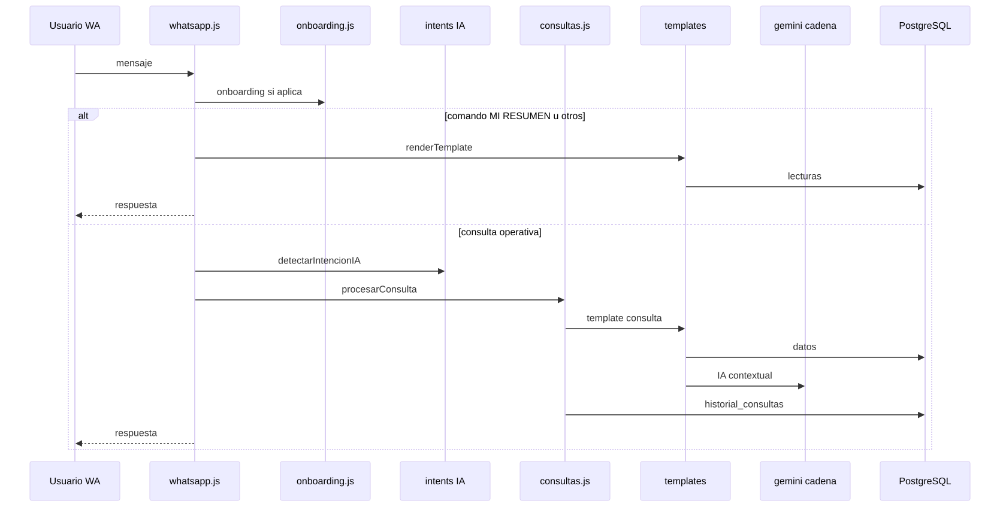

El servicio principal es src/index.js: un proceso Node que combina Express (API REST + archivos estáticos en frontend/public), cliente WhatsApp Web (whatsapp-web.js), PostgreSQL, crons (node-cron) y arranque de jobs (recolector, enviador).

Los mensajes entran por config/whatsapp.js: primero onboarding si aplica; comandos explícitos (p. ej. MI RESUMEN) pueden resolver con renderTemplate sin pasar por procesarConsulta; las consultas operativas van a services/consultas.js y plantilla consulta, con cadena de IA en services/gemini.js y persistencia en historial_consultas cuando corresponde.

El recolector y los scrapers alimentan tablas como precios, tipo_cambio, clima, noticias_agro, etc. Servicios como resumen.js, snapshot.js, la plantilla consulta y el dashboard leen esas tablas. También existen escrituras puntuales desde otras rutas (p. ej. refresco de dólar en templates/base.js).

Express sirve páginas HTML del panel y expone APIs bajo /api/. La autenticación admin usa cookie firmada con ADMIN_KEY. services/dashboard.js concentra consultas agregadas para métricas, usuarios, alertas e IA.
| Área | Observación |
|---|---|
| Tipo de cambio “del día” | Existen dos implementaciones obtenerTipoCambioDia: en services/resumen.js (ventana 10 días, DISTINCT ON (LOWER(tipo)), mapeos bna→oficial, bolsa→mep) y en services/primer_resumen.js (7 días, DISTINCT ON (tipo), con compra/fuente, sin esos mapeos). |
| Plan del usuario | resolverPlan en templates/base.js (alias basic) vs normalización y resolverPlanEfectivo en services/planes.js (incluye básico con tilde y trial). La capa de plantillas no refleja por sí sola plan_activo_hasta. |
| Actualización USD | Varios puntos escriben tipo_cambio: obtenerDolarFresco en templates/base.js, insertTipoCambio en jobs/recolector.js, asegurarTipoCambioReciente en primer_resumen.js. |
| Área | Observación |
|---|---|
| Historial | La acción MI RESUMEN resuelta directamente en whatsapp.js no pasa por procesarConsulta, por lo que puede no generar fila en historial_consultas (impacto en cupos y métricas “por consulta”). |
| IA pipeline mercado vs usuario | jobs/pipelineDiario.js usa generarResumenMercado (Gemini). Las consultas de usuario usan generarConPromptLibre con orden multi-proveedor según env: políticas distintas. |
| Área | Observación |
|---|---|
| Tests | En package.json, el script test no ejecuta pruebas reales. |
| Deploy | deploy:safe apunta a una ruta absoluta local de multisitio; depende de la máquina del desarrollador. |
| Nombre | Paquete agrohabilis vs marca/dominio AgroHabilis / habilispro en distintos textos. |
| Área | Observación |
|---|---|
| Esquema | Definiciones en scripts/db/setup-db.js, migraciones SQL y en ocasiones DDL en models/*.js: conviene documentar el orden de aplicación para entornos viejos. |
| Área | Observación |
|---|---|
| Doble capa IA | msg.reply puede pasar por humanizarSalidaConIA salvo excepciones (replySinIA, bypass por plantilla con separadores / PLANTILLA): riesgo de reescritura de salidas estructuradas si una ruta no está contemplada. |
| Cupos | El límite mensual de plan gratis se aplica en el flujo de consulta operativa; rutas de comando directo pueden no consumir el mismo cupo. |
Se revisó la estructura de carpetas, index.js, jobs principales, whatsapp.js, consultas.js, dashboard.js, registro de plantillas, resumen.js / primer_resumen.js, planes.js, templates/base.js y búsquedas cruzadas (guardarConsulta, obtenerTipoCambioDia, procesarConsulta). No equivale a leer y validar cada archivo del repositorio.